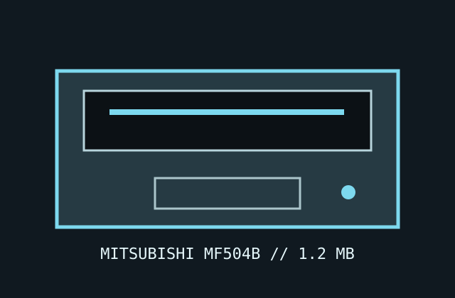

[ IDENTIFIED PC FLOPPY DRIVE ]
Mitsubishi MF504B 1.2 MB 5.25-inch drive
The MF504B is a half-height 5.25-inch HD member of Mitsubishi's MF500B series. Use the B-series application notes and the precise model label to distinguish it from MF504A/C revisions.

Documented specifications
| Density / capacity | 5.25-inch, 80-track/96-TPI, double-sided HD; PC 1.2 MB HD format and standard 360 KB DD media support with correct speed/alignment. |
|---|---|
| Interface | 34-pin IBM-PC-compatible data/control interface; 4-pin +5 V/+12 V power. |
| Data rate / speed | 500 kbit/s HD; 250 kbit/s DD controller mode. 360 rpm HD and DD mode as documented/configured by the model's speed selection. |
| Jumpers / drive select | Configuration options include DS0–DS3, motor behavior, speed/ready output and termination. Select one drive-select line, then follow the PC cable convention and manual's termination instructions. |
| Dimensions / power | Approx. 146 × 41 × 195 mm half-height unit; +5 V (about 0.5 A typical) and +12 V (about 0.6 A typical), with higher startup current. Recheck MF504B application notes for limits. |
| PC controller compatibility | Works with PC/AT-compatible 765-family controllers in 1.2 MB mode; 360 KB read compatibility is not a guarantee of correct writes or interchange across differently aligned drives. |
Preservation notes
Keep the DS, motor, speed, and termination settings documented with the drive. Check for a fitted resistor pack, dry bearings, belt wear, and head contamination; preserve the original configuration before any repair.
Manuals & archive sources
- Mitsubishi MF500B series specifications and application notesModel-family documentation explicitly covering MF504B.
- Mitsubishi flexible disk drive manual archiveBrowsable archive of Mitsubishi drive specifications and service notes.